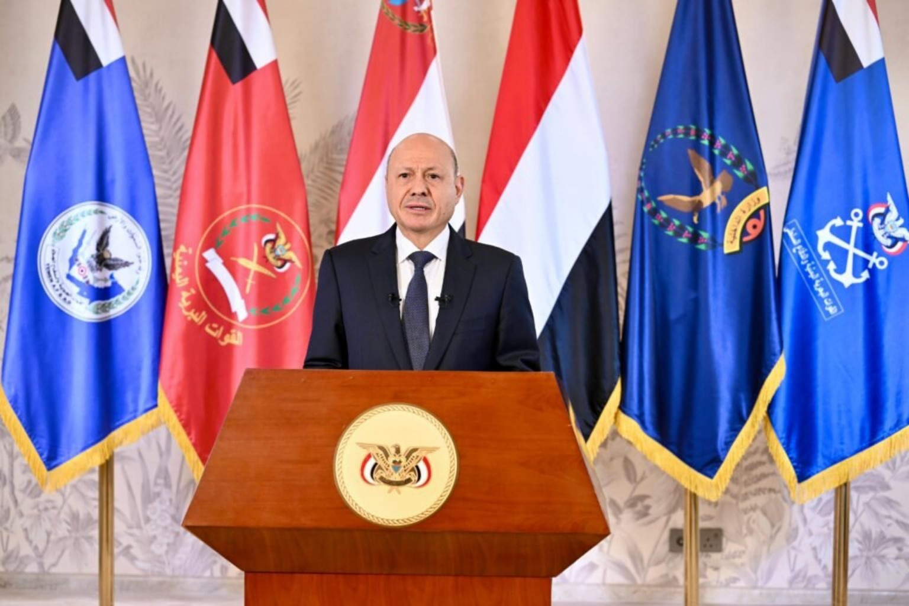

رصد اليوم فقط | تحديثات طارئة | مصادر رسمية ودولية | مع فصل أخبار 4 أكتوبر عن أحداث الأمس

أعلن رئيس مجلس القيادة الرئاسي رشاد محمد العليمي، اليوم الأحد، بدء العمليات العسكرية لاستعادة ما تبقى من أراضي الجمهورية وبسط سلطة الدولة ومؤسساتها على كامل التراب الوطني، معلناً الانتقال من مرحلة الاستعداد والتهيئة إلى مرحلة العمل بعد استنفاد فرص التهدئة.
المصدر: سبأنت والموقع الرسمي للرئيس — منشوران بتاريخ 4 أكتوبر 2026م.
تسجيل القوات المسلحة المرفق بالنشرة، ويُعرض كعنصر مستقل عن الصياغة التحريرية.
ملف التسجيل غير متوفر في النسخة المحفوظة.
التسجيل: الملف المرفق بالنشرة — دون إعادة تحرير لمحتواه.
بحسب بيان رسمي نشر اليوم، أعلنت القوات المسلحة تنفيذ 97 عملية استهداف دقيقة في جبهة طور الباحة ومحور تعز، وقالت إن العمليات أسفرت — وفق البيان — عن تحييد 260 عنصراً وتدمير أو إعطاب 44 آلية ووسيلة نقل وإمداد عسكرية، مع الإعلان عن ضربات ضد أهداف في صنعاء وصعدة.
تنبيه تحريري: أرقام الخسائر والعمليات الواردة هنا منسوبة إلى البيان العسكري وليست نتيجة تحقق ميداني مستقل.
المصدر: سبأنت وقناة اليمن الفضائية — 4 أكتوبر 2026م.
ناقش شركاء القطاع الصحي في عدن اليوم الوضع الوبائي، وحالات الإسهالات المائية الحادة، والاستعداد والاستجابة للحد من الأمراض المنقولة بالمياه، إضافة إلى أوضاع النازحين واحتياجاتهم الصحية.
المصدر: سبأنت — 4 أكتوبر 2026م.
أعلن مشروع «مسام» اليوم أن فرقه نزعت خلال الأسبوع الأول من أكتوبر 1,256 لغماً وذخيرة غير منفجرة وعبوة ناسفة، بينها 1,201 ذخيرة غير منفجرة و41 لغماً مضاداً للدبابات و14 لغماً مضاداً للأفراد، مع تطهير 157,127 متراً مربعاً من الأراضي.
المصدر: سبأنت نقلاً عن غرفة عمليات مشروع مسام — 4 أكتوبر 2026م.
توقعت هيئة الأرصاد طقساً رطباً وحاراً على السواحل، مع أمطار متفرقة واحتمال أمطار رعدية غزيرة في أجزاء من المرتفعات والمنحدرات الغربية والجنوبية الغربية، قد تمتد إلى أجزاء من لحج وأبين وشبوة وحضرموت.
المصدر: مركز التنبؤات الجوية والإنذار المبكر — 4 أكتوبر 2026م.
بحث وزير التخطيط والتعاون الدولي في عدن اليوم مع مكتب الأمم المتحدة لخدمات المشاريع أولويات المشاريع الأساسية في التعليم والطاقة والطرق والمياه، إلى جانب التدخلات الطارئة للنازحين والمياه والصرف الصحي والخدمات الأساسية.
المصدر: سبأنت — 4 أكتوبر 2026م.